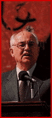

1980.html
Perestroika and Glasnost

Young and energetic Gorbachev came to power in 1986 becoming the General Secretary of Communist Party of USSR. His ideas, reform policies of Perestroika and Glasnost brought changes that destroyed Soviet Union and shook the world. However, he was not a revolutionary like Lenin in the sense that he did not want these radical changes to happen. He wanted to keep Soviet Union as a whole, and one party state. He believed once reformed and prosperous Soviet Union would serve as an example of an ideal socialist state for other countries.
Official Definition of Perestroika
Gorbachev now serves as an honorable president Green Cross, visit Michail Gorbachev's Homepage
Glasnost
Gorbachev discovered that in order to implement his plans for economic reform, he needed support from party officials as well as general public. Thus he started the program of Glasnost, to expose problems in economic, cultural aspects of life in Soviet Union. People who were taught to believe everything was OK in Soviet Union was shocked and excited. Censure in literature, and media was relaxed. Weekly magazines and newspapers such as Ogonek, Argumenty i Fakty became the leading edges of Glasnost. Gorbachev invited a famous dissident Sakharov from exile in Gorki.
More on Sakharov